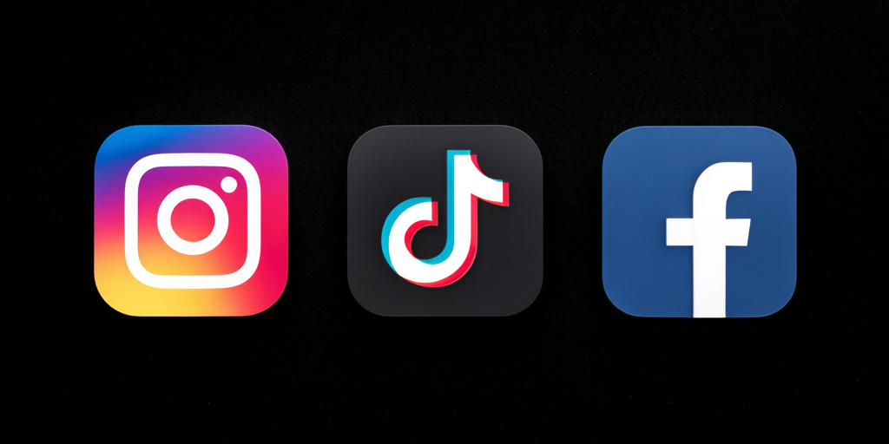

Media Społecznościowe
Activation
Warmińskie Centrum Psychoterapii — Kompleksowa strategia aktywacji social media: Instagram, Facebook, TikTok. 60+ dat, 30-dniowy plan startowy, spójna identyfikacja wizualna.
📋 Spis treści
- Aktualny Stan — Audyt profili
- Kalendarz Treści — Kalendarz 60+ dat
- Strategia Platformowa — Instagram, Facebook, TikTok
- Unifikacja Profili — Spójna identyfikacja
- Filary Treści — 5 filarów treści
- Pierwsze 30 Dni — Plan Startowy
- Szablony Wizualne — Szablony Graficzne
- KPI i Śledzenie — Metryki i Cele
- Budżet — Koszty i narzędzia
Aktualny Stan — Audyt profili społecznościowych WCP
Zanim aktywujemy, musimy zrozumieć punkt wyjścia. Poniżej audyt obecnego stanu profili WCP w mediach społecznościowych.
| Metryka | Aktualny Stan | Cel (6 miesięcy) |
|---|---|---|
| Obserwujący | ~200–400 (szacunkowo) | 1,500+ |
| Częstotliwość publikacji | Sporadyczne / nieaktywne | 4–5x/tydzień |
| Rodzaj treści | Głównie statyczne posty | Rolki + Karuzele + Stories |
| Aktywność Stories | Brak / rzadko | Codziennie min. 3 ramki |
| Highlights | Nie uporządkowane | 6–8 highlightów z brandingiem |
| Link w bio | Tylko strona | Linktree z 5+ linkami |
Kluczowy problem: Profil istnieje, ale nie jest aktywnie zarządzany. Brak spójnej identyfikacji wizualnej, nieregularne publikacje, brak strategii Rolki — a to największy silnik zasięgu na Instagramie w 2026.
| Metryka | Aktualny Stan | Cel (6 miesięcy) |
|---|---|---|
| Polubienia strony | ~300–600 (szacunkowo) | 1,200+ |
| Częstotliwość publikacji | Okazjonalna | 3–4x/tydzień |
| Wykorzystanie Events | Nie / rzadko | Miesięcznie events + workshops |
| Opinie/oceny | Kilka opinii | 50+ opinii, aktywne odpowiedzi |
| Messenger | Pasywny | Auto-odpowiedź + aktywna rezerwacja |
| Grupy | Brak | Grupa społeczności WCP (faza 2) |
Kluczowy problem: Facebook to nadal najważniejsza platforma dla grupy docelowej 30–55 lat w Polsce. Brak wykorzystania Events, Messenger jako kanał kontaktu, i niedostateczna odpowiedź na opinie to trzy największe luki.
TikTok
| Metryka | Aktualny Stan | Cel (6 miesięcy) |
|---|---|---|
| Konto | Nie utworzone | Aktywne, 2–3x/tydzień |
| Obserwujący | 0 | 800+ |
| Rodzaj treści | Brak | Krótkie porady terapeutyczne, obalanie mitów |
| Opublikowane wideo | 0 | 30+ (pierwsze 90 dni) |
Kluczowy problem: TikTok nie istnieje — a to platforma z najszybszym organicznym zasięgiem w Polsce. Krótkie formaty psychopedukacyjne idealnie pasują do terapii. Nie musimy tańczyć — wystarczy mówić o zdrowiu psychicznym w przystępny sposób.
Kalendarz Treści — Kalendarz 60+ dat
Kalendarz zawiera 60+ dat dni świadomości, świąt polskich, i okazji sezonowych — każda powiązana z konkretną usługą WCP. To nie jest lista "co opublikować" — to mapa możliwości. Wybieramy 3–5 dat na miesiąc i tworzymy wokół nich kampanie.
🏆 Top 10 Najważniejszych Dat
Kalendarz wg miesięcy
Styczeń — Nowy początek bez presji
- 1 — Nowy Rok
- 6 — Trzech Króli
- 15 — Blue Monday
- 27 — Dzień Pamięci Holokaustu
Luty — Miłość i relacje
- 2 — Matki Boskiej Gromnicznej
- 14 — Walentynki
- 21 — Dzień Języka Ojczystego
- 28 — Dzień Chorób Rzadkich
Marzec — Kobiety i zdrowie
- 1 — Pierwszy dzień wiosny
- 8 — Dzień Kobiet ★
- 20 — Równonoc wiosenna
- 21 — Światowy Dzień Snów
- 27 — Dzień Teatru
Kwiecień — Prawda o terapii
- 1 — Prima Aprilis (mity o terapii)
- 2 — Dzień Świadomości Autyzmu
- 7 — Światowy Dzień Zdrowia ★
- 18–19 — Wielkanoc
- 22 — Dzień Ziemi
Maj — Różnorodność rodzin
- 1 — Święto Pracy
- 10 — Dzień Matki ★
- 15 — Dzień Rodziny
- 17 — Dzień Przeciwko Homofobii
- 31 — Dzień bez Tytoniu
Czerwiec — Lęk i wolność
- 1 — Dzień Dziecka ★
- 21 — Pierwszy dzień lata
- 23 — Noc Kupały
- 26 — Dzień Walki z Narkotykami
Lipiec — Terapia w podróży
- 1–31 — Wakacje (ciągłość online)
- 15 — Dzień Krawca
- 26 — Dzień Babci i Dziadka
Sierpień — Powroty i zmiany
- 1 — Rocznica Powstania Warsz.
- 15 — Wniebowzięcie NMP
- 23 — Dzień Pamięci Ofiar Łącznie.
- 31 — Koniec wakacji
Wrzesień — Wsparcie w rutynie
- 1 — Początek roku szkolnego
- 21 — Jesień się zaczyna (SAD)
- 23 — Równonoc jesienna
- 29 — Dzień Chłopaka
Październik — Świadomość psychiczna
- 1 — Dzień Weterana
- 5 — Dzień Nauczyciela
- 10 — Światowy Dzień Zdrowia Psych. ★
- 19 — Dzień Raka Piersi
- 31 — Halloween
Listopad — Zespół i zaufanie
- 1 — Wszystkich Świętych ★
- 11 — Święto Niepodległości
- 19 — Dzień Psychologa ★
- 25 — Dzień Przeciwko Przemocy
- 30 — Andrzejki
Grudzień — Prezenty i granice
- 6 — Mikołajki
- 24–26 — Boże Narodzenie ★
- 31 — Sylwester
Aktywność Platformowa — Posty na Tydzień
Wykres pokazuje planowane posty na tydzień w poszczególnych fazach aktywacji. Instagram i Facebook rosną stopniowo, TikTok dołącza od Miesiąca 2.
Kalendarz Treści — Mapa Cieplna
Ciemniejsze pola = więcej planowanych postów. Miesiące z awareness days (Październik, Marzec) mają wyższą gęstość treści.
Strategia Platformowa — Instagram, Facebook, TikTok
Instagram — Główna platforma wizualna
Rola: Główna platforma budowania marki, psychoedukacji i konwersji. Instagram to gdzie pacjenci szukają terapeutów — i gdzie terapeuci pokazują, że są prawdziwi.
Częstotliwość publikacji
| Format | Częstotliwość | Cel |
|---|---|---|
| Karuzele | 2x/tydzień (Wt, Czw) | Psychoedukacja, mity, poradniki |
| Rolki | 2–3x/tydzień | Zasięg, viralność, porady 30s |
| Post statyczny | 1x/tydzień (Nd) | Cytat, refleksja |
| Stories | Codziennie (min. 3 ramki) | Zaangażowanie, ankiety, zakulisowe |
| Live | 2x/miesiąc | Q&A z terapeutą, głębokie tematy |
Strategia Rolek
- Porady terapeutyczne: "3 techniki oddechowe na lęk" (30s) — 2x/miesiąc
- Obalanie mitów: "Czy terapeuta ocenia?" (15s) — 1x/miesiąc
- Dzień z życia: "Dzień z życia terapeuty WCP" (45s) — 1x/miesiąc
- Pytania pacjentów: "Najczęstsze pytania na pierwszej sesji" (60s) — 2x/miesiąc
- Popularne audio: Adaptacja trendów do kontekstu terapii — gdy pojawia się okazja
Hashtag Strategia
- Branded (zawsze): #WCP #WarmińskieCentrumPsychoterapii #TerapiaOnline
- Zdrowie psychiczne: #ZdrowiePsychiczne #Terapia #Psychologia #Depresja #Lęk
- Lokalne: #Olsztyn #Elbląg #Ostróda #Warmia #Mazury
- Usługi: #TerapiaPar #GrupaWsparcia #ADHD #Trauma
- Świadomość: #DzieńKobiet #ŚwiatowyDzieńZdrowiaPsychicznego
Unikać: Zbyt klinicznych terminów (#MajorDepressiveDisorder), hashtagów wyłącznie anglojęzycznych.
Struktura Dzienna Stories
Rano: Cytat / Afirma
"Zacznij dzień od jednej rzeczy, za którą jesteś wdzięczny/a"
Środek dnia: Psychoedukacja / Poll
"Czy czujesz się przytłoczony/a dziś?" (Tak / Czasem / Nie)
Wieczór: Refleksja / Q&A
"Co Cię wspierało w tym tygodniu?" lub terapeuta takeover
Facebook — Centrum Społeczności i Wydarzeń
Rola: Hub społecznościowy dla lokalnej społeczności 30–55 lat. Facebook to gdzie rodzice szukają pomocy dla dzieci, gdzie organizujemy events, i gdzie Messenger jest najszybszym kanałem kontaktu.
Częstotliwość publikacji
| Format | Częstotliwość | Cel |
|---|---|---|
| Posty z linkami (blog/artykuły) | 1–2x/tydzień | SEO, autorytet, ruch na stronę |
| Posty wydarzeń | Miesięcznie | Warsztaty, webinary, otwarte drzwi |
| Posty społecznościowe | 1x/tydzień | Ankiety, pytania, lokalne zaangażowanie |
| Wideo / Live | 2x/miesiąc | Q&A, terapeuci w centrum uwagi |
| Messenger | Codzienne monitorowanie | Zapytania o rezerwację, szybka pomoc |
Events Strategia
- Miesięcznie open Q&A: "Zadaj pytanie terapeucie" — Facebook Live, 30 min
- Warsztaty: Warsztaty stresu, mindfulness, granice w relacjach — FB Events + rejestracja
- Open days: "Otwarte Drzwi WCP" — zaproszenie do poznania zespołu, space tours
- Tydnie świadomości: Światowy Dzień Zdrowia Psychicznego — tydzień pełen wydarzeń
Messenger jako kanał rezerwacji
Auto-odpowiedź: "Dziękujemy za wiadomość! 🤍 Odpowiadamy w ciągu 1 godziny w godzinach pracy (8–20). Pilna sprawa? Zadzwoń: 576 081 786 lub umów wizytę: wcp.com.pl"
TikTok — Krótkie Porady Terapeutyczne
Rola: Platforma odkrywania — najszybszy organiczny zasięg w Polsce, idealna dla psychoedukacji w formie krótkiej, przystępnej. Nie potrzebujemy tańczyć — potrzebujemy mówić o zdrowiu psychicznym w sposób, który ludzie chcą udostępniać.
Częstotliwość publikacji
| Format | Częstotliwość | Cel |
|---|---|---|
| Porady terapeutyczne (15–30s) | 2x/tydzień | Zasięg, zapisania, udostępnienia |
| Obalanie mitów (15–30s) | 1x/tydzień | Edukacja, viralność |
| Seria „Czy wiesz, że…" | 1x/tydzień | Świadomość, ciekawość |
| Popularne dźwięki | Gdy pojawiają się okazje | Wsparcie algorytmu |
Przykłady Treści
- "3 rzeczy, których nie wiesz o lęku społecznym" (30s)
- "Dlaczego wypalenie zawodowe nie jest lenistwem" (25s)
- "Co naprawdę dzieje się na pierwszej sesji terapii" (45s)
- "Znak, że potrzebujesz terapii — a o którym nikt nie mówi" (20s)
- "ADHD u dorosłych: 5 mitów" (carousel-style, 30s)
Hashtag Strategia TikTok
- #psychologia #terapia #zdrowiepsychiczne #depresja #lęk #wypalenie #ADHD #trauma
- #olsztyn #warmia #mazury (lokalne odkrywanie)
- #fyp #dlaCiebie (wzmacniacze algorytmu)
Unifikacja Profili — Spójna identyfikacja wizualna
Schemat Kolorów
| Color | Hex | Usage |
|---|---|---|
| Obsydian (ciemny) | #101418 | Tło, tła postów, bazy stories |
| Złoty (główny akcent) | #e6c364 | Nagłówki, CTA, akcenty, obramowania, ikony |
| Złoty Przygaszony | #c9a84c | Akcenty drugorzędne, stany hover |
| Biały | #ffffff | Tekst korpusowy, logo WCP na ciemnych tłach |
| Szaroniebieski Wyciszony | #8a9bb0 | Tekst drugorzędny, podpisy |
Użycie Logo
- Zdjęcia profilowe: WCP logo (white on dark) na wszystkich trzech platformach — identyczne zdjęcie profilowe
- Zdjęcia okładkowe (Facebook): Ciemne tło + logo + tagline "Profesjonalna pomoc psychologiczna"
- Okładki Highlights (Instagram): Ciemne kółka ze złotymi ikonami (Canva): 📅 Wizyta, 👥 Zespół, 💬 Grupa, 📚 Edukacja, ⭐ Opinie, 🎯 Specjalizacje
- Profil TikTok: To samo logo, ciemny/neutralny baner jeśli dostępny
Spójność Bio
Typografia
- Grafiki postów: Inter (nagłówki), Manrope (etykiety/tagi) — spójne ze stroną internetową i wszystkimi materiałami WCP
- Styl podpisów: polski, ciepły ale profesjonalny, nigdy kliniczny. Używaj półpauz, nie myślników
- Użycie emoji: Spójny zestaw — 🕯️ 🧠 💛 🌿 📅 👥 — nie losowe. Złote serce 💛 zamiast czerwonego ❤️
Spójność ze stroną internetową
- Ciemny motyw odzwierciedla wcp.com.pl — profesjonalny, nie żartobliwy
- Złote akcenty tworzą ciepło bez bycia „uroczym”
- Ta sama rodzina czcionek (Inter + Manrope) co strona = spójność marki
- CTA language consistent: "Umów wizytę" not "Zarezerwuj" or "Kliknij"
- Link w bio zawsze prowadzi do wcp.com.pl (przez Linktree)
Filary Treści — 5 filarów treści
Każdy post WCP pasuje do jednego z pięciu filarów. To nie ograniczenie — to ramy, które zapewniają różnorodność i spójność. Proporcje: Edukacyjny 30%, Za kulisami 20%, Społeczny 20%, Opinie 15%, Promocyjny 15%.
Tygodniowy Rytm Treści
| Dzień | Motyw | Filar | Przykład |
|---|---|---|---|
| Poniedziałek | Motywacja | Edukacyjny | Cytat + porada na tydzień |
| Wtorek | Edukacja | Edukacyjny | Karuzela: mit vs fakt |
| Środa | Warsztat | Edukacyjny | Ćwiczenie praktyczne (oddech, grounding) |
| Czwartek | Zespół | Za kulisami | Terapeuta w centrum uwagi |
| Piątek | Luźniej | Społeczny | Meme / terapeutyczny moment do utożsamienia |
| Sobota | Historia | Opinie | Historia pacjenta (zanonimizowana) |
| Niedziela | Refleksja | Promocyjny | "Co Cię wspierało w tym tygodniu?" + CTA |
Pierwsze 30 Dni — Plan Startowy
Tydzień 1 (Dni 1–7) — "Kim jesteśmy"
Cel: Pokazać, że profil żyje. Zbudować fundament — kim jesteśmy, co robimy, jak działamy.
Tydzień 2 (Dni 8–14) — "Czego się uczymy"
Cel: Psychoedukacja jako główny silnik. Budujemy pozycję eksperta. Rolki zaczynają generować zasięg.
Tydzień 3 (Dni 15–21) — "Jak działamy"
Cel: Praktyczne informacje o WCP — proces, dostępność, online. Obniżamy barierę wejścia.
Tydzień 4 (Dni 22–30) — "Do działania"
Cel: Konwersja. Jasne CTA, dostępność, promocja usług. Ludzie już wiedzą, kim jesteśmy — teraz muszą wiedzieć, jak zacząć.
Szablony Wizualne — Szablony Graficzne
Szablony Stories (1080 × 1920px)
Szablony Postów (1080 × 1080px)
Szablony Karuzeli (1080 × 1350px, 5–8 slajdów)
Okładki Rolek (1080 × 1920px, widoczne jako 1080 × 1350 w siatce)
Okładki Highlights na Instagramie (1080 × 1080px kółka)
Konfiguracja Brand Kitu Canva
- Kolory: #101418 (główne tło), #e6c364 (akcent), #c9a84c (drugorzędny), #ffffff (tekst), #8a9bb0 (wyciszony)
- Czcionki: Inter (nagłówki, tekst), Manrope (etykiety, tagi, tekst wielkimi literami)
- Logo: WCP_logo_white.svg — używaj jako znak wodny przy 10–15% kryciu lub pełne krycie w pasku bocznym/na dole
- Prześlij wszystkie szablony jako „Szablony Marki" — zespół może duplikować i edytować bez psucia projektu
Trend Zaangażowania — Likes, Comments, Shares
Projekcja oparta na benchmarkach branży health/wellness na Instagramie. Cel: 3–5% wskaźnik zaangażowania do miesiąca 6.
KPI i Śledzenie — Metryki i Cele
Miesięczne Cele KPI
Częstotliwość Przeglądu
| Częstotliwość | Co | Kto | Działanie |
|---|---|---|---|
| Tygodniowo | Wyniki postów, odpowiedzi DM | Community Manager | Dostosowanie treści na następny tydzień |
| Miesięcznie | Pełny przegląd dashboardu KPI | Strateg Treści + Karolina | Korekty strategii, nowe pomysły treściowe |
| Quarterly | Głęboka analiza: co działało, co nie, ROI | Pełny zespół | Rewizja kalendarza, przegląd budżetu, decyzje o zmianie kierunku |
Pytania do Przeglądu Kwartalnego
- Które posty miały najwyższe zaangażowanie? Dlaczego?
- Jaki dzień/godzina działa najlepiej? (Dostosować scheduling)
- Które dni świadomości rezonowały, a które „upadły"?
- Czy przyciągamy idealnych pacjentów czy tylko likes?
- Jaki jest nasz cost per inquiry (jeśli reklamujemy)?
- Ile rezerwacji pochodzi ze social media vs innych kanałów?
Atrybucja Rezerwacji — "Jak się o nas dowiedziałeś?"
Dodaj pole "Jak się o nas dowiedziałeś/aś?" do formularza rezerwacji (Booknetic). Opcje:
- TikTok
- Google Search
- ZnanyLekarz
- Polecenie znajomego
- Inne
To jedyne sensowne źródło danych o realnym ROI social media. Bez tego — zgadujemy.
Budżet — Koszty i narzędzia
Miesięczne Narzędzia i Subskrypcje
| Narzędzie | Cel | Koszt (PLN/mies.) |
|---|---|---|
| Canva Pro | Projektowanie grafik, szablony, brand kit | ~50 |
| Later.com lub Buffer | Planowanie postów, analityka | ~75 |
| Meta Business Suite | Analityka i planowanie FB/IG | Darmowe |
| CapCut | Montaż wideo Rolek/TikTok | Darmowe |
| Unum or Planoly | Wizualne planowanie siatki | ~40 |
| Linktree Pro | Zarządzanie linkiem w bio | ~40 |
| Google Analytics | Ruch na stronie z social media | Darmowe |
Miesięczny koszt narzędzi: ~205 PLN
Jednorazowe Koszty Konfiguracji
| Pozycja | Cel | Koszt (PLN) |
|---|---|---|
| Brand Kit Canva + Szablony | Tworzenie początkowych szablonów (10+ szablonów) | Wewnętrzne (czas ~8h) |
| Sesja fotograficzna | Zdjęcia zespołu, wnętrza kliniki, portrety terapeutów | 500–1,500 |
| Konfiguracja Highlights na Instagramie | 8 okładek highlights z brandingiem | Wewnętrzne (Canva) |
| Konfiguracja Linktree | 5–6 skonfigurowanych linków | Wewnętrzne (1h) |
| Optymalizacja bio/profilu | Ujednolicone na wszystkich 3 platformach | Wewnętrzne (2h) |
Jednorazowe koszty: 500–1,500 PLN (głównie sesja foto)
Płatna Promocja (Opcjonalnie / Faza 2)
| Kanał | Miesięczny Budżet | Grupa Docelowa | Cel |
|---|---|---|---|
| Instagram/Facebook Ads | 500–1,000 PLN | Kobiety 25–45, Warmia-Mazury | Ruch na stronę, generowanie leadów |
| Wzmocnione posty | 100–200 PLN/post | Obecni obserwujący + podobni | Amplifikacja zasięgu w kluczowych datach |
| TikTok Ads (Faza 3) | 500–1,000 PLN | 18–35, zainteresowanie zdrowiem psychicznym | Świadomość, wzrost obserwujących |
Szacunkowy Budżet Łączny — Pierwsze 6 Miesięcy
Protokół Kryzysowy i Ochronny
Gdy ktoś pisze DM w kryzysie:
"Dziękujemy, że się do nas zgłaszasz. Bardzo nam zależy na Twoim bezpieczeństwie.
Jeśli myślisz o samobójstwie lub czujesz, że możesz zrobić sobie krzywdę, prosimy, skontaktuj się natychmiast z:
☎️ Telefon Zaufania dla Dorosłych: 116 123 (bezpłatny, 24/7)
☎️ Telefon Zaufania dla Dzieci i Młodzieży: 116 111
🚨 Numer alarmowy: 112
Możemy również pomóc Ci umówić pilną konsultację z naszym zespołem — daj znać, jeśli chcesz, żebyśmy oddzwonili.
Jesteś ważny/a. Prosimy, szukaj wsparcia teraz. 💛"
Role i Obowiązki Zespołu
| Rola | Obowiązki | Osoba |
|---|---|---|
| Strateg Treści | Planowanie kalendarza, wybór tematów, przegląd KPI | [TBD] |
| Copywriter | Polskie podpisy, stories, scenariusze rolek | [TBD] |
| Projektant | Grafiki Canva, karuzele, szablony | [TBD] |
| Wideooperator | Nagrywanie i montaż rolek | Tomek |
| Community Manager | Odpowiadanie na komentarze, DM, moderacja | [TBD] |
| Zatwierdzający | Końcowy przegląd przed publikacją | Karolina |
- Przegląd strategii z Karoliną i zespołem marketingowym
- Przypisanie ról — kto robi co (copy, design, approval, posting)
- Stworzenie szablonów Canva — szablony z brandingiem dla powtarzających się postów
- Tworzenie partii treści Q1 — zacząć od styczeń-marzec
- Konfiguracja narzędzi — Meta Business Suite + Later + Linktree
- Uruchomienie i iteracja — mierzymy, uczymy się, dostosowujemy